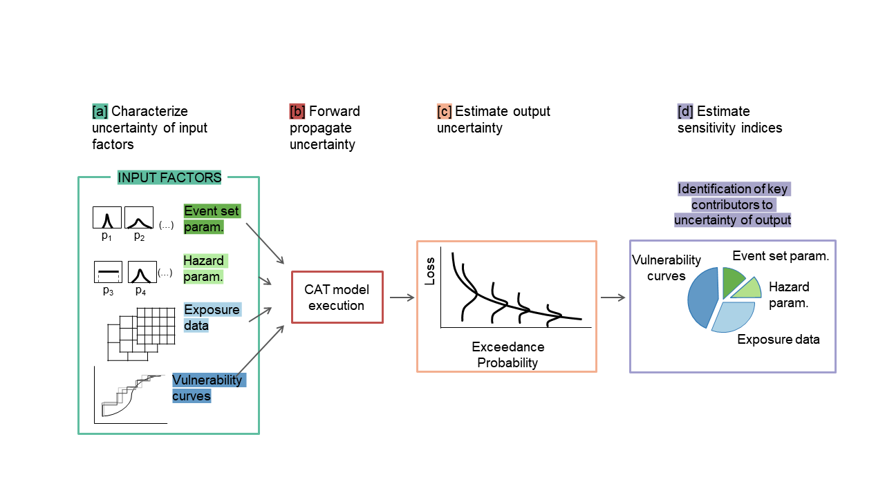
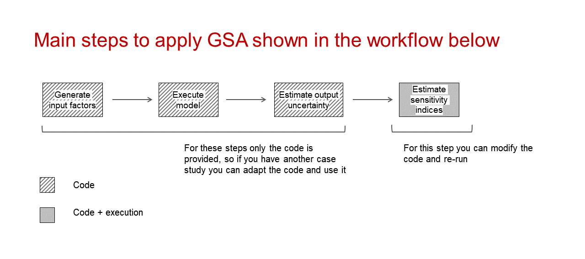
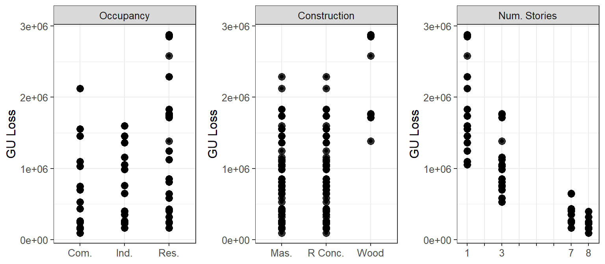
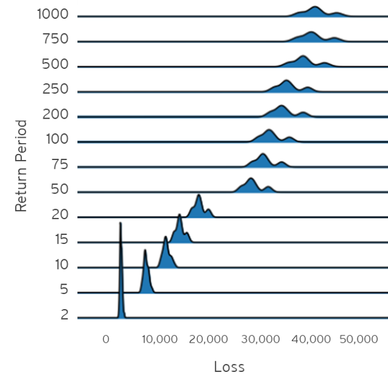
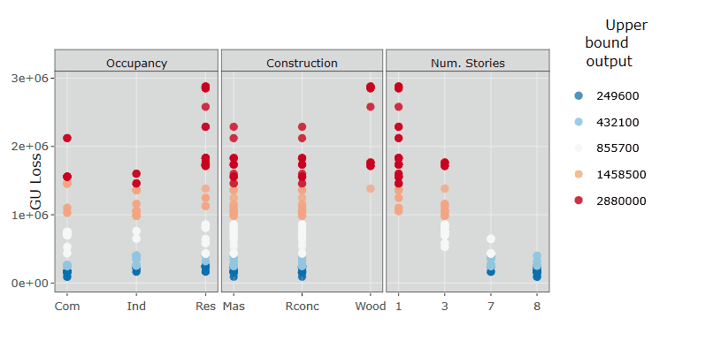
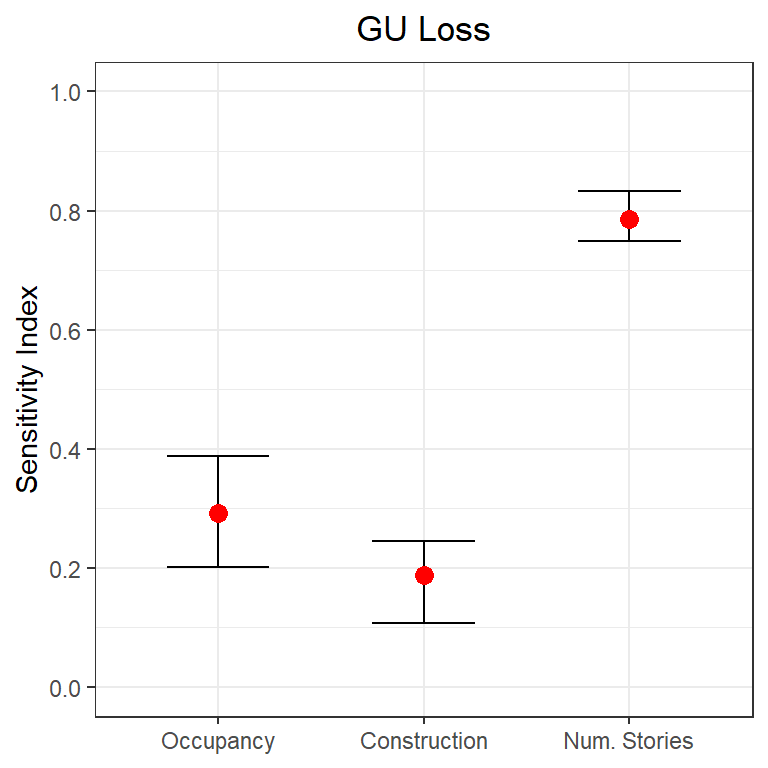
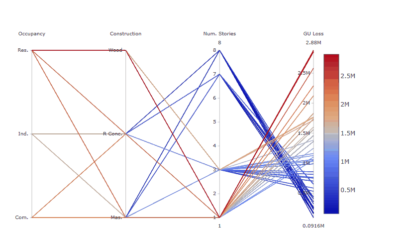
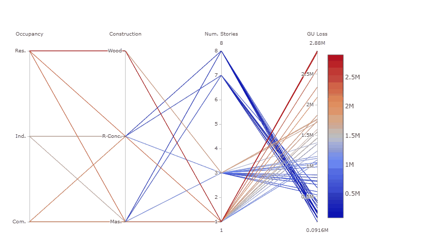
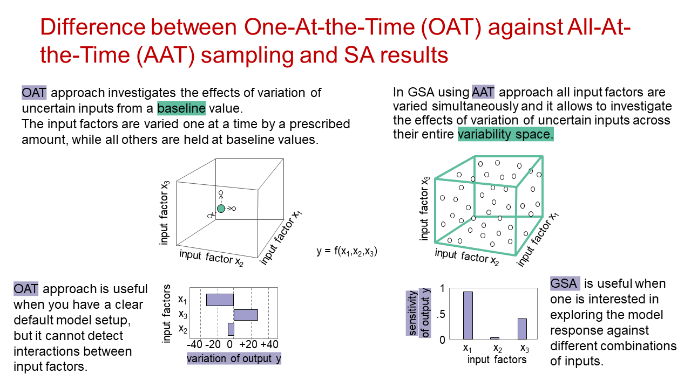
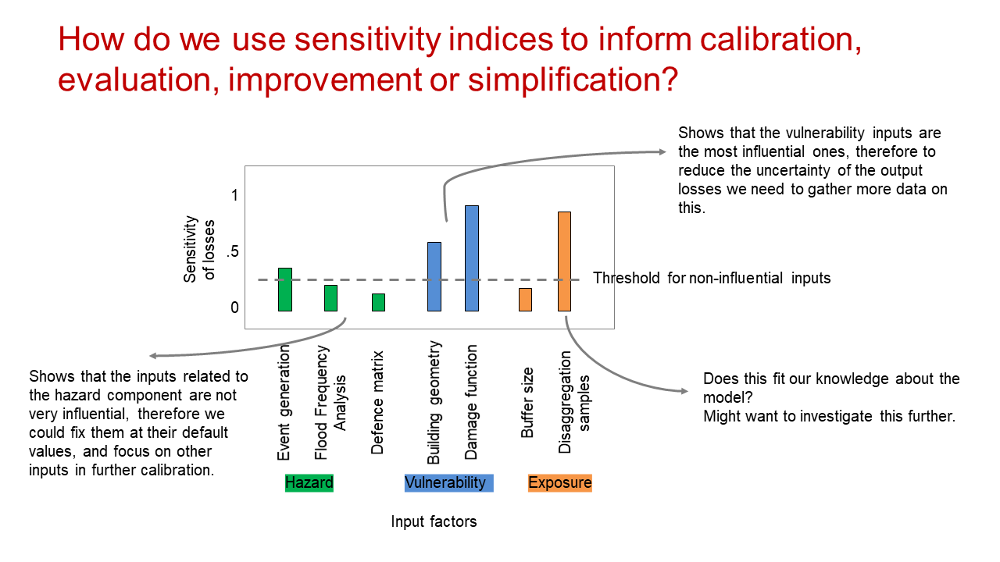

Workflow to apply Global Sensitivity Analysis to a third-party cat model
Valentina Noacco, Francesca Pianosi, Thorsten Wagener (University of Bristol)
Work in collaboration with AXA XL
2020-10-22
This document provides:
a brief introduction to Global Sensitivity Analysis (GSA);
a workflow to apply GSA to a third-party cat model and to interpret the results using the SAFE (Sensitivity Analysis For Everybody) toolbox in R (References 1-2) and interactive visualisations.
The workflow can be used:
to learn about GSA by exploring the results obtained with a practical example;
as a draft code that can be modified by users to apply GSA to their own model.
This is a proof of concept only, and the model results should not be considered exemplificative of any third-party cat model.
PART I: Introduction
What is Global Sensitivity Analysis and why shall we use it?
Global Sensitivity Analysis is a set of mathematical techniques which investigate how the uncertainty in the model inputs influences the variability of the model outputs (References 3-4).
The benefits of applying GSA are:
Gain a better understanding of the model: Evaluate the model behaviour beyond default set-up.
Get a “sanity check” of the model: Identify unexpected model responses so to guide the model debugging and the definition of its scope of validity.
Identify priorities for uncertainty reduction: Identify the important inputs on which to focus acquisition of new data, computationally intensive calibration, etc.
Make more transparent and robust decisions: Understand how assumptions about uncertain inputs reflect on the modelling outcome and thus on model-informed decisions.
How Global Sensitivity Analysis works
The figure below summaries the main steps to apply GSA to a generic cat model (References 4-5).
An ‘input factor’ is any element that can be changed before running the model. In general, input factors could be the model’s parameters, forcing input data, but also the very equations implemented in the model or other set-up choices (for instance, the spatial resolution) needed for the model execution on a computer.
In the example of this workflow, the input factors subject to GSA will be three primary modifiers: Occupancy class, Construction type and Number of stories.
An ‘output’ is any variable that is obtained after the model execution.
In this example the output is the Ground-up Losses (GU Loss).

The uncertainty in each input factor is characterised by a range of variability or a probability distribution, and a number of input factor combinations are sampled from such ranges/distributions.
The model is repeatedly run against each of the sampled combinations of input factors.
The output samples so obtained can be used to visually explore the output uncertainty, for instance through a probability distribution plot or a set of scatter plots.
Input and output samples are quantitatively analysed in order to obtain a set of sensitivity indices. The sensitivity indices measure the relative contribution of each input factor to the output uncertainty.
In which way is GSA different from conventional One-At-the-Time Sensitivity Analysis?
How do we use sensitivity indices to inform calibration, evaluation, improvement or simplification?
PART II: Workflow application

Step 1: Load the packages
# Install and load the packages below:
library(caTools)
library(calibrater) # Install from tar file, also available at: https://people.maths.bris.ac.uk/~mazjcr/calibrater_0.51.tar.gz
library(SAFER) # Install from source file
library(matrixStats)
library(ggplot2)
library(cowplot)
library(gridExtra)
library(plotly)Steps 2 and Step 3 can be performed in R or in other environments (i.e. platform where model is run). In this case it was performed in another environment, so we can go to Step 4a.
Step 2: Define input factors subject to GSA and their distributions
The choice of the distribution of the input factors and their range of variation can be made by expert judgment, available data or literature sources.
In this case study the input factors are three primary modifiers:
Occupancy class(Commercial, Industrial, Residential)Construction type(Masonry, Reinforced concrete, Wood)Number of stories(1, 3, 7, 8)
click the Code button to display the code
# Uncomment the following if sampling in R:
# DistrFun <- c("unifd","unifd","unifd") # Input factors distribution
# DistrIn <- list( c(1, 3), c(1, 3), c(1, 4)) # Indices of the categorical input factors
# x_labels <- c("Occupancy","Construction","Num. Stories") # Name of input factorsStep 3: Sample input factors space
The number of model runs (N) typically increases proportionally to the number of input factors (M) and will also depend on the GSA method chosen. As a rule of thumb, the GSA method used here (Regional Sensitivity Analysis) usually requires more than 100 model runs per input factor (M) (see References 3-4 for further details).
click the Code button to display the code
# Uncomment the following if input factors sampling is performed in R:
# SampStrategy <- "lhs" # Here the sampling strategy for All At the Time (AAT) sampling is
# # Latin hypercube (another option is random uniform)
# N <- 300 # Sample size
# M <- length(DistrIn) # Number of input factors
# X <- AAT_sampling(SampStrategy, M, DistrFun, DistrIn, N) # Sample input factors space
# colnames(X) <- x_labels # Set columns namesStep 4: Execute the model
a) If the model is in another environment
Execute the model. Then load the file with the simulated input factors (one row per simulation and one column per input factor sampled) and the simulated outputs (one row per simulation, one column per estimated output).
M <- 3 # Define number of input factors
data <- as.matrix(read.csv("Simulations.csv", header = T, sep= ",", colClasses = c(rep("numeric",4)), fileEncoding="UTF-8-BOM"))
X <- data[,c(1:3)] # Display first rows of the input factors to check format
head(X)## Occupancy Construction Numstories
## [1,] 3 3 1
## [2,] 3 2 1
## [3,] 3 1 1
## [4,] 3 3 3
## [5,] 3 2 3
## [6,] 3 1 3Legend of categorical input factors
Occupancy class:
1 = Commercial; 2 = Industrial; 3 = Residential
Construction type:
1 = Masonry; 2 = Reinforced concrete; 3 = Wood
Y <- data[,4]
head(Y) # Display first rows of the output to check format## [1] 2880000 2288000 2288000 1769600 1125900 1125900b) If the model is in R
click the Code button to display the code
# Uncomment the following if the model is coded in R:
#Y <- cat_model(X) # Where 'cat_model' is your chosen modelStep 5: Visualise input/output samples for a qualitative assessment of the model behaviour
Let’s plot input factor-output scatterplots:
x_labels <- c("Occupancy","Construction","Num. Stories") # Name of input factors for legend
sz_tx <- 12 # Font size for plots
N <- length(Y) # Get number of samples
colnames(X) <- x_labels # Set column names
# Define x-axis labels (this is needed only if you want to display the name of the categorical variables)
occ_labels <- c("Com.", "Ind.","Res.")
cons_labels <- c("Mas.", "R Conc.","Wood")
n_stories <- c("1"," ","3"," "," "," ","7","8")
# Define x-axis ticks (this is needed only if you want to display the name of the categorical variables)
xlims <- list(c("1","2","3"), c("1","2","3"), c("1","2","3","4","5","6","7","8") )
xlabs <- list(occ_labels, cons_labels, n_stories)
# Use the SAFER function `scatter_plots` to visualise inputs/outputs
plts_GU <- list()
for(ii in 1:3){
plts_GU[[ii]] <- scatter_plots(X[ , ii, drop = FALSE], Y, prnam = x_labels[ii]) +
ylab("GU Loss") +
theme(text = element_text(size=sz_tx)) + theme(axis.title.x=element_blank()) +
scale_x_discrete(limits=xlims[[ii]], labels=xlabs[[ii]]) + geom_point(alpha = 0.8, size = 3)
}
grid.arrange(grobs = plts_GU, nrow = 1, ncol = 3)
How to read these plots:
The plots show how the output (on the y-axis, i.e. GU Loss) varies as the input factors (on the x-axis, i.e. Occupancy class, Construction type and Number of stories) vary.
Each point represents the output (i.e. loss) from 1 simulation, which results from the value of the three input factors.
(Let’s remember that all input factors are varied at the same time, so when looking at a single plot (e.g. GU Loss vs Construction type, and we see that, for wood Construction type, the output losses are divided roughly into two groups, this might be due to another input factor(s).)
In order to assess whether an input factor is influential we are going to look for patterns along the x-axis (e.g. are the losses increasing or decreasing as the Number of stories increases? are losses considerably higher for one Construction type compared to the other two?).
The scatterplots can also reveal unexpected behaviours and outliers, which may require further investigation.
What we can learn about the model behaviour from these scatterplots:
From these scatter plots we can see that the input factor with the greatest influence on the output is the Number of stories, as the increase of the Number of stories markedly decreases the losses.
For the Construction type, wood results in higher losses, while masonry and reinforced concrete result in low as well as high losses.
For the Occupancy class, residential can result in the highest losses.
Visualise outputs’ distributions
If you have the results for different return periods, you can visualise the distribution of the losses for the different return periods.
click the Code button to display the code
# Uncomment the following if you have the necessary data:
# Y_unc <- read.csv("file_with_losses_for_different_RP.csv", header = T) # file with the estimated losses,
# one row per simulation and one column per return period
# ggplot(Y_unc, mapping = aes(x = value, y = key)) + geom_density_ridges(scale = 5, size = 0.25, rel_min_height = 0.03, alpha = 0.7) + theme_ridges() + xlab("Loss") + ylab("Return Period")click the example figure button to show an example of what the plot could look like

Step 6: Compute GSA to quantitatively assess the influence of the input factors on the outputs
Let’s now apply Global Sensitivity Analysis: for example Regional Sensitivity Analysis (RSA), which aims at estimating the combination of values of the input factors that lead to different regions (e.g. high or low values) of the output.
RSA divides the output samples into different groups, where each group contains the same number of samples.
n_groups <- 5; # Number of groups into which the output is splitted, default = 10
Nboot <- 100 # Number of resamples used for bootstrapping
# Perform RSA
rsa_stats <- RSA_indices_groups(X, Y, n_groups, Nboot) # With the `Nboot`argument bootstrapping is performed.
# Statistics across all bootstrap resamples
mvd_mean <- rsa_stats$mvd_mean # mean sensitivity index (i.e. maximum vertical distance (mvd) between the CDFs generated by dividing each input factor into `n_groups`) across bootstrap resamples
idx <- rsa_stats$idx # index which divides the output into different groups
# Compute mean and confidence intervals of the sensitivity indices across the
# bootstrap resamples:
alfa <- 0.05 # Significance level for the confidence intervals estimated by bootstrapping
mvd_mean_m <- colMeans(mvd_mean) # median
mvd_mean_lb <- colQuantiles(mvd_mean,probs=alfa/2) # Lower bound
mvd_mean_ub <- colQuantiles(mvd_mean,probs=1-alfa/2) # Upper boundVisualise input/output samples divided by group
Let’s now replot the results as in Step 5, but where the outputs are divided into different groups and coloured accordingly (i.e. red for higher losses, blue for lower losses).
# Convert matrix of inputs `X` so that name of the categorical values appear in the figure
cat_X <- X
cat_X[,1][cat_X[,1]==1] <- "Com"
cat_X[,1][cat_X[,1]==2] <- "Ind"
cat_X[,1][cat_X[,1]==3] <- "Res"
cat_X[,2][cat_X[,2]==1] <- "Mas"
cat_X[,2][cat_X[,2]==2] <- "Rconc"
cat_X[,2][cat_X[,2]==3] <- "Wood"
p1 <- scatter_plots(cat_X, Y, ngr = n_groups, prnam = x_labels) + ylab("GU Loss") +
theme(text = element_text(size=sz_tx)) + theme(axis.title.x=element_blank()) +
scale_colour_brewer(palette = "RdBu", direction = -1) +
geom_point(alpha = 0.8, size = 2) + ylab("GU Loss") + xlab("Input factors")
ggplotly(p1) %>% layout(margin = list(t = 80)) %>% layout(plot_bgcolor='d9d9d9')How to read these plots:
These plots show the same results as in Step 5, but the estimated output sampels are coloured based on the magnitude of the loss (e.g. red for high losses, blue for low losses). These plots are interactive so, if you are interested in visualising only one subset of values (e.g. those producing high losses for wood Construction type), you can select those values to zoom in, as in the gif below.

Plot the sensitivity indices and assess the robustness of the GSA method
Here the sensitivity indices are plotted. For more information on how the sensitivity indices are derived refer to Sec. 3.4 of Reference 3.
The robustness of the method is visually assessed with the 95% confidence intervals around the mean estimate of the sensitivity indices. This will also reveal whether the number of simulations run was sufficient for our purpose.
boxplot1(mu = mvd_mean_m, lb = mvd_mean_lb, ub = mvd_mean_ub, prnam = x_labels) + ylab("Sensitivity Index") +
ggtitle('GU Loss') + theme(plot.title = element_text(hjust = 0.5))
How to read this plot:
The plot shows the sensitivity index for each input factor for the output (i.e. GU Loss). The sensitivity index indicates how influential one input factor is on driving the uncertainty of the output. The closer the sensitivity index of an input factor is to 1, the more influential that input factor is, conversely the closer to zero the less influential it is.
The plot shows also the 95% confidence interval for the sensitivity indices. If the confidence intervals of two input factors are overlapping, than we cannot confidently state which input factor is more influential, which might hint that a higher number of samples (i.e. simulations) is needed.
What we can learn from this plot:
The results are consistent with the examination of the scatterplots, the Number of stories is the most influential input factor, followed by Occupancy class and then Contruction type.
The assessment of the robustness of the results shows that the number of simulations used is sufficient to confidently say that the Number of stories is the most influential input factor. Instead we cannot confidently say that Occupancy class is more influential than Construction type, as their confidence intervals are overlapping.
Step 7: Visualise the interactions between input factors through parallel coordinate plots
data_pc <- data.frame(Occupancy = X[,1], Construction = X[,2], Numstories = X[,3], GU_Loss = Y)
data_pc['idx'] <- idx # add group to the dataframe
p <- data_pc %>%
plot_ly(type = 'parcoords',
line = list(color = ~GU_Loss,
colorscale = 'RdBu',
showscale = TRUE,
reversescale = F),
dimensions = list(
list(range = c(1,3),
label = 'Occupancy', values = ~Occupancy, tickvals = c(1,2,3), ticktext = occ_labels),
list(range = c(1,3),
label = 'Construction', values = ~Construction, tickvals = c(1,2,3), ticktext = cons_labels),
list(range = c(1,8),
label = 'Num. Stories', values = ~Numstories),
list(range = c(min(data_pc['GU_Loss']), max(data_pc['GU_Loss'])),
label = 'GU Loss', values = ~GU_Loss)
)
)
pHow to read this plot:
The parallel coordinate plot shows the combination of values for the three inputs factors that lead to various values of output losses.
Each y-axis represents the range of values of the input factors, and output, respectively. Each line represents one simulation, and shows the value taken by each input factor and the corresponding estimated output loss. Each line is coloured depending on the value of the output (i.e. dark red for high losses, dark blue for low losses).
The plot above is interactive so, if you are interested in visualising only one subset of values, you can select different combinations of sub-range of values for each input factor and/or output on the y-axes and highlight the corresponding simulations. You can also move the y-axis horizontally in order to change the order in which input factors are visuallised, which might help to highlight interactions between input factors.
For example, the gif below shows that by sliding the axis of the Number of stories to the left (between Occupancy class and Constuction type) it will be more evident that low losses are coming from buildings with high Number of stories, any Occupancy class, and reinforced concrete or masonry as Construction type.

Try also to select only high GU Loss (e.g. above 2.5 million), these are coming from residential buildings, with one storey and made of wood, as shown in the gif below.

What we can learn from this plot:
The plot helps to highlight that even though the Number of stories appeared to be the most influential input factor from the Global Sensitivity Analysis results, high losses are found for residential buildings made of wood, which usually have one story, as the number of stories is a primary modifier usually inferred from the type of occupancy, for which there is a stricter data quality process.
References
RSA is based on the function created as part of the SAFE Toolbox by F. Pianosi, F. Sarrazin and T. Wagener at Bristol University (2015). Please refer to the Licence file in the SAFE toolbox.
Appendix


* Please cite this document as:
Noacco V, Pianosi F, Wagener T (2020). Workflow to apply Global Sensitivity Analysis to a CAT model
Acknowledgements
This work has been funded by the UK Natural Environment Research Council (NERC):
KE Fellowship: NE/R003734/1